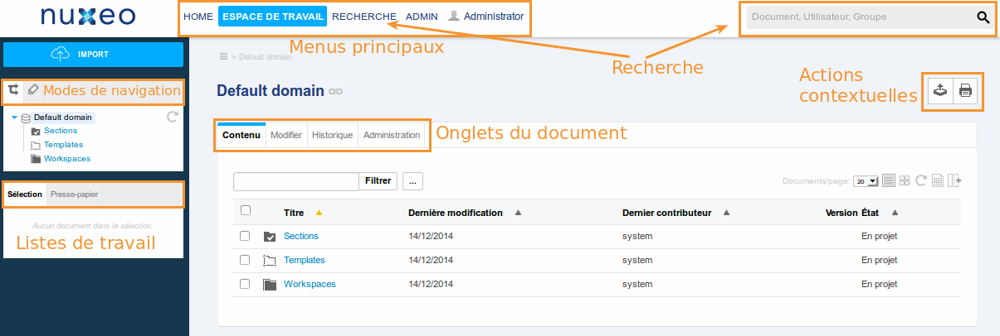
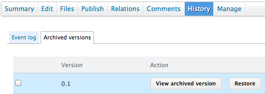
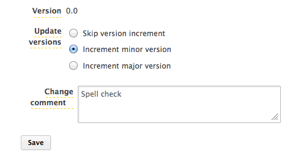

nuxeo / Trainings
# Nuxeo Platform - Gestion des documents
## Interface et structure d'une platforme Nuxeo
###Home
Accès : privé
#### Tout ce qui vous concerne
- Tableau de bord
- Préférences utilisateur
- Profil
- Tâches de workflow
- Notifications
###Espace de travail
Accès : tous
#### Tout pour gérer vos documents
#### Structure :
- Domaines
- Espaces de travail (workspaces)
- Espaces de publication (sections)
- Modèles d'espaces de travail (templates)
###Admin Center
Accès : administrateurs et power users
#### Tout pour administrer la plateforme
- Infos système et statistiques
- Configuration technique
- Mises à jour (correctifs)
- Personnalisation de l'application
- Installation d'add-ons
- Installation de configuration Nuxeo Studio et de développements
## L'interface de gestion documentaire d'une plateforme Nuxeo
### L'interface de gestion documentaire Nuxeo

## Structure documentaire d'une platforme Nuxeo
### Les espaces de travail
#### Principes
- Les espaces de travail (workspaces) permettent de créer du contenu en équipe
- On crée généralement un espace de travail pour chaque équipe ou projet
- Chaque espace de travail peut avoir sa propre configuration (couleurs, outils de recherche, etc...)
http://doc.nuxeo.com/x/MoEk
### Les modèles d'espaces de travail (templates)
#### Principes
- Peuvent servir de base pour créer un espace de travail
- On les utilise pour accélérer la création d'une structure
- On peut avoir autant de modèles que l'on veut
- L'utilisation d'un modèle lors de la création d'un espace de travail est facultatif
### Les sections
#### Principes
- Les sections permettent de **diffuser** du contenu, de communiquer un résultat final
- **On ne crée pas de contenu dans une section**
- Quand on souhaite diffuser un document, on en prend une photo que l'on publie dans une section
- On donne généralement des droits d'accès différents pour les sections de ceux des espaces de travail
http://doc.nuxeo.com/x/V4Ek
### Les domaines
#### Principes
- Les `sections`, `espaces de travail (workspaces)` et `modèles d'espace (templates)` sont placés dans des `domaines`
- Le domaine est la racine d'un espace de travail et de diffusion
- On peut créer autant de domaines que l'on souhaite
- On utilise typiquement des domaines pour des populations différentes
- Par exemple un domaine pour l'intranet, et un pour l'extranet
- Les domaines peuvent communiquer entre eux ou pas, selon les droits d'accès définis dans chacun
## Questions ?
## [Point sur l'agenda](0.0.1-agenda.html)
## Le concept de document dans la plateforme Nuxeo
###Qu'est-ce qu'un document?

###Un document...
#### N'est pas seulement un fichier
#### Mais une instance d'un type de document (Fichier, Note, Dossier, Facture, Contrat…)
#### Est défini par un ensemble d'informations appelées méta données
- Qui peuvent être renseignées
- automatiquement (date de création, nom du fichier…)
- ou manuellement (description, sujet...)
#### Les méta données sont regroupées dans des `schémas`.
- Un document peut avoir autant de schémas que nécessaire,
- Les schémas peuvent être réutilisés pour d'autres types de documents.
#### A un cycle de vie spécifique (liste de statuts autorisés)
#### A des facettes qui définissent ses capacités
###Voir une liste de documents - L'onglet contenu
- Disponible seulement pour les documents conteneurs (Dossier, Espace de travail...)
- Affiche les documents enfants

###Créer un document manuellement
- Dans un espace, appuyer sur `Nouveau document`
- Sélectionnez le type de document
- Les types disponibles dépendent de l'endroit où vous vous trouvez

###Créer un document manuellement
#### Principaux types de document
- `Fichier`, un document avec un ou plusieurs fichier(s) attaché(s)
- `Note`, un document éditable en ligne
- `Workspace`, un espace de travail collaboratif configurable
- `Dossier`, un dossier classique pour organiser les documents
#### D'autres sont disponibles
- `Collection`
- `Dossier ordonné`
- etc...
http://doc.nuxeo.com/x/S4Ek
###Créer un document manuellement
#### Renseigner les méta données

### Le résumé d'un document
- Onglet qui apparait pour les documents non conteneurs
#### Affiche une vue résumée du document
- Principales méta données et contenu
- Particularités
- Version
- Statut
- Contributeurs
- Tags
- Commentaires
- etc...
#### Vous donne accès à des fonctionnalités
- Lien permanent
- Télécharger le fichier
- etc...
 ###Exercice - Création de documents
#### Créez les espaces de travail:
- Service communication
- Département informatique
- Ressources humaines
#### Créez une
###Exercice - Création de documents
#### Créez les espaces de travail:
- Service communication
- Département informatique
- Ressources humaines
#### Créez une note dans l'espace de travail du service communication
- **Titre :** Newsletter du mois
- **Note :** Indiquez ci-dessous les sujets que vous voulez aborder dans la newsletter du mois
#### Créez un fichier dans l'espace de travail des ressources humaines
- **Titre :** Grille salariale 2014
- Attachez un fichier de type word ou libre office writer (si vous n'en avez pas, vous pouvez le créer auparavant)
## Questions ?
## [Point sur l'agenda](0.0.1-agenda.html)
## Modification de documents
###Modification de documents
#### Pour modifier les méta données :
- On change les informations à l'écran directement
#### Pour modifier le fichier :
- On le télécharge
- On le modifie en local
- Et on l'uploade à nouveau sur la plateforme

#### Pour ajouter d'autres fichiers :
- Onglet fichiers
- Disponible seulement pour les documents de type fichier
### Modification de documents - Utiliser le glisser déposer
#### Pour simplifier la mise à jour du fichier
- Il suffit de le faire glisser déposer dans la zone **contenu principal** de l'onglet résumé
- Ou dans l'espace où il se trouve
 #### Aussi pour la création d'un document
- Placez vous dans un espace
- Glissez déposez rapidement pour un import rapide
- Glissez et attendez pour un import avec possibilité de renseigner les méta données
#### Aussi pour la création d'un document
- Placez vous dans un espace
- Glissez déposez rapidement pour un import rapide
- Glissez et attendez pour un import avec possibilité de renseigner les méta données
 ### Modification en masse
#### Pour modifier plusieurs documents à la fois
- Placez vous dans un espace
- Cochez les documents voulus
- Et cliquez sur modifier
#### Avec l'add-on spreadsheet
- Placez vous dans un espace
- Sélectionnez les colonnes à voir à l'écran (actions contextuelles du listing)
- Editez les documents à la volée avec le bouton spreadsheet (actions contextuelles du listing)
###Exercice - Modification de documents
#### Dans l'espace du service communication
- Faites glisser déposer rapidement plusieurs fichiers
- Modifiez la couverture de ces fichiers pour
### Modification en masse
#### Pour modifier plusieurs documents à la fois
- Placez vous dans un espace
- Cochez les documents voulus
- Et cliquez sur modifier
#### Avec l'add-on spreadsheet
- Placez vous dans un espace
- Sélectionnez les colonnes à voir à l'écran (actions contextuelles du listing)
- Editez les documents à la volée avec le bouton spreadsheet (actions contextuelles du listing)
###Exercice - Modification de documents
#### Dans l'espace du service communication
- Faites glisser déposer rapidement plusieurs fichiers
- Modifiez la couverture de ces fichiers pour France, et le sujet pour informatique
## Questions ?
## [Point sur l'agenda](0.0.1-agenda.html)
### Enregistrer des versions pour un document


#### Evite d'avoir à le copier, le renommer...
- ...et de perdre ses modifications !
#### L'option est disponible à la modification
- Le choix entre version mineure et majeure
- est sans impact sur le document
- permet juste à un utilisateur de savoir si vous avez changé beaucoup de choses... ou pas
#### Les versions sont disponibles
- Dans l'onglet historique, versions archivées
- Les versions peuvent être...
- Consultées
- Restaurées
- Comparées
- Supprimées
- Même après restauration d'une ancienne version, les plus récentes restent disponibles
- Attention : la version 0.0 n'est jamais archivée
###Exercice - Gestion des versions
#### Dans l'espace du service communication
- Modifiez le contenu de la note "newsletter"
- Créez une version mineure
- Répétez ces opérations à nouveau
- Comparez vos deux versions
- Restaurez la première version
- Modifiez le document et créez une nouvelle version mineure. Quel est son numéro ? Pourquoi ?
### Pour supprimer un document
- Cochez un ou plusieurs documents et cliquez sur "supprimer"
- Le document est placé à la corbeille
- La corbeille est accessible par les administrateurs de l'espace
###Corbeille
#### Les documents ne sont pas directement supprimés définitivement
- Mais placés auparavant à la corbeille
#### Depuis la corbeille il est possible d'effectuer
- Restauration
- Suppression définitive
### Autres fonctionnalités d'un espace
#### Copier / Déplacer un ou plusieurs documents
- Cocher
- Bouton copier
#### Récupérer plusieurs fichiers à la fois
- Bouton ajouter à la sélection
- Dans la sélection, cliquer sur export zip
#### Editer une liste de documents
- En haut à droite de la liste, cliquer sur l'icône spreadsheet (nécessite l'add-on Spreadsheet)
## Questions ?
## [Point sur l'agenda](0.0.1-agenda.html)
←
→
/
#